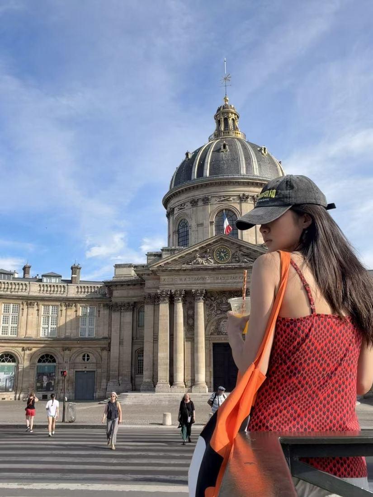
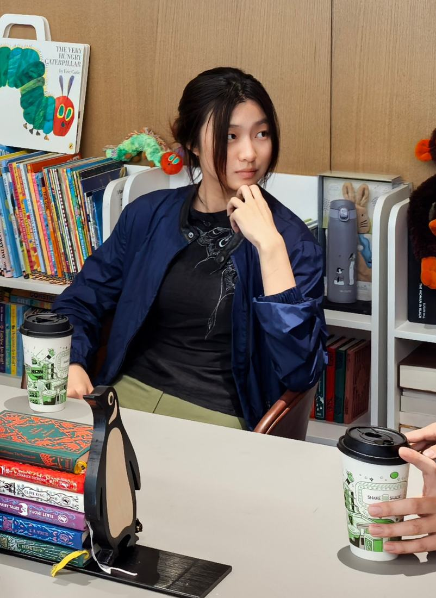

03 — About
Hello, I’m Vega.
Mostly, I want to understand how children learn, and how adults can become better guides.

01 — Building
Learning to build
I’m a student at Babson College studying business, entrepreneurship, and technology. I enjoy building new ideas and turning them into solutions that make a difference.
02 — Children
Learning from children
Early childhood education is where my questions start: how to support children to reach their full potential. Montessori teacher training and time in the classroom with young children shape how I think about learning.

03 — Technology
Tools that stay human
I’m exploring how AI can create real, positive impact, especially in education. I believe technology should strengthen meaningful human interactions rather than replace them.
04 — Making
Making things by hand
Away from screens, I draw, paint, collaborate on children’s literature, travel, and try things I don’t yet know how to do.
What I’m working towards
A more curious, compassionate, and creative world.
Along the way
- Babson CollegeBusiness, entrepreneurship & technology
- Montessori teacher trainingEducation
- Classroom experienceYoung children
- Truvit2023–2027
- Children’s literatureCollaboration with Julia Cook
- RootMapCurrent focus